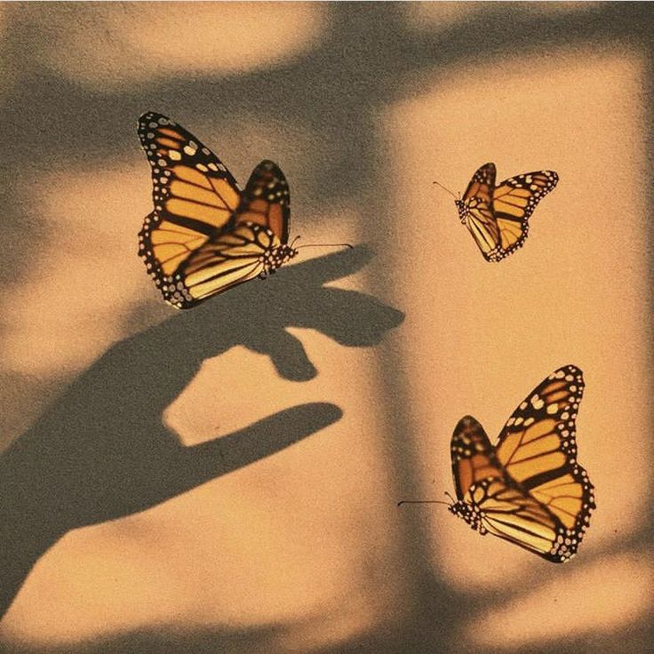

Biodiversity
Butterflies

Butterflies belong to the Kingdom Animalia and are insects from the order Lepidoptera.
The Lepidoptera life cycle has four stages respectively:
Egg, Larva(caterpillar), Pupa(crysalis), Adult(imago)
There are about 17 500 species of butterflies in the world. The different types include: Monarch, Painted Lady, Cabbage white, Orange Sulphur,
Question Mark and many more.
Some interesting facts include that their sense of taste, smell and touch receptors are actually
located on their feet
Interestingly in their larva stage they are boneless, however they are made up of 1000 muscles
Butterflies have an average life span of 3-4 weeks.